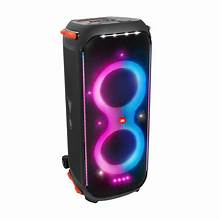
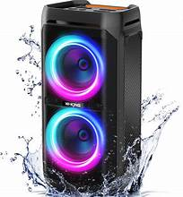
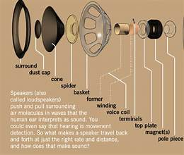

This image shows the front view of a modern speaker system with colorful RGB lighting around the speaker drivers. The attractive lighting effects enhance the visual appearance while the speakers produce high-quality audio for music, movies, and gaming. The speaker is designed to deliver clear sound with powerful bass. It is commonly used in homes, parties, and entertainment setups.
This image displays a speaker cabinet featuring dual RGB-lit speaker units. The design combines powerful sound output with stylish lighting effects, making it suitable for parties, home entertainment, and gaming setups. The vibrant lights create an attractive visual experience. Its advanced audio technology ensures balanced and immersive sound.
This image shows the back side of the speaker system. The rear panel contains ports, controls, and connectivity options that allow the speaker to connect with various audio devices and power sources. These connections improve compatibility with modern electronics. The design also allows easy setup and maintenance.
This image illustrates the internal structure of a speaker. Components such as the diaphragm, voice coil, magnet, and cone work together to convert electrical signals into sound waves. Each component plays an important role in sound production. The internal design helps achieve high-quality and efficient audio performance.